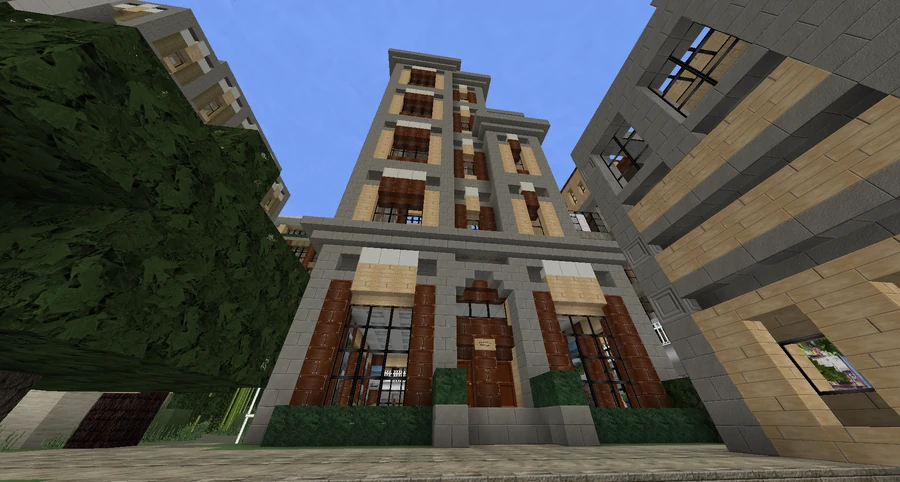

D & F Holdings
A holding and acquisitions company founded in Broville in 2013, originating from FoxCreek Properties INC. Its corporate tower stands on Fox Street in Downtown.
Origins and property expansion
D & F Holdings is described as one of the city’s largest land acquisition and property investment corporations. It originated with FoxCreek Properties INC., which built its first offices near University Square on Broville’s outskirts in 2013.
FoxCreek grew rapidly in the residential sector by purchasing a 50-chunk area from the city government, subsequently known as University Park. The development became one of the region’s most expensive subdivisions. Sales of 13 private houses, eight townhomes and two apartment buildings supplied the revenue used to establish D & F Holdings Incorporated.



Holdings
At its formation, the company’s portfolio included majority stakes in:
- The University Park community.
- Brotech Web Services.
- FoxCreek Properties and its holdings.
- MienKart Transportation.
- Mautner Coal.
- VC Insurance Services.
This portfolio spanned resources, manufacturing, housing and technology. The corporate tower is identified as 118 Fox Street in Downtown Broville.
Advertising: SELL IT! Marketing
Marketing Proposal is a set of campaign proposals signed by SELL IT! Marketing, which identifies itself as a D & F company. The document adds advertising to the company's business profile without giving the date or percentage of this holding.
The proposal presents radio and television advertisements and a flyer for PestBros, a pest removal service. Its ideas include removing pigs and cows from rooftops and tackling silverfish infestations. The book records proposed advertisements without demonstrating that they were published or broadcast.
The 2013 outlook
The account based on second-quarter earnings anticipated rapid acquisition growth during the remainder of 2013 and possibly in 2014. This was an expectation at the time, rather than confirmation of later acquisitions.
See also
Sources and references
- v11.4.4 maps, signs, books and items World records
- D & F Holdings · Broville Wiki Community archive
- Marketing Proposal · SELL IT! Marketing World book
Text adapted and expanded from D & F Holdings (contributors and history, revision 5077). Adapted text is available under CC BY-SA 3.0.